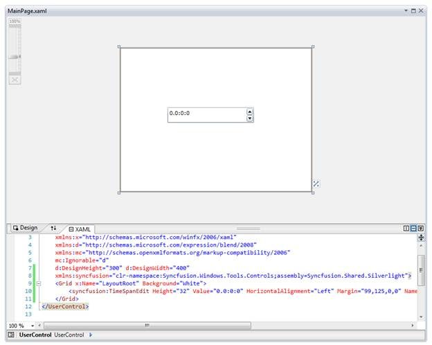
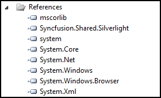
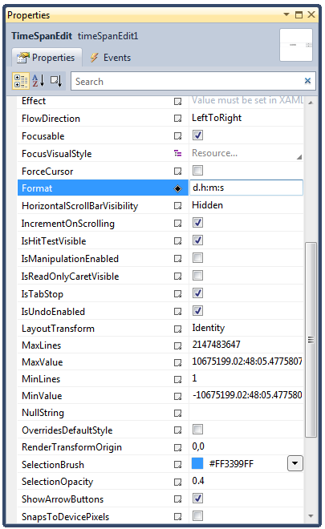

To add TimeSpanEdit control to a Visual Studio.NET project:
1. Open a 2010 VS project. The Syncfusion controls are listed in the Toolbox.
2. Click and drag the TimeSpanEdit control from the toolbox and drop it in the designer.

Figure 296: TimeSpanEdit control in Designer
3. Syncfusion.Shared.Silverlight assemblies will be added automatically to the application reference.

Fig 297: Assemblies added into References
4. Press F4 or open the properties window to customize the control by setting the required properties.

Figure 298: Customization using Properties Window